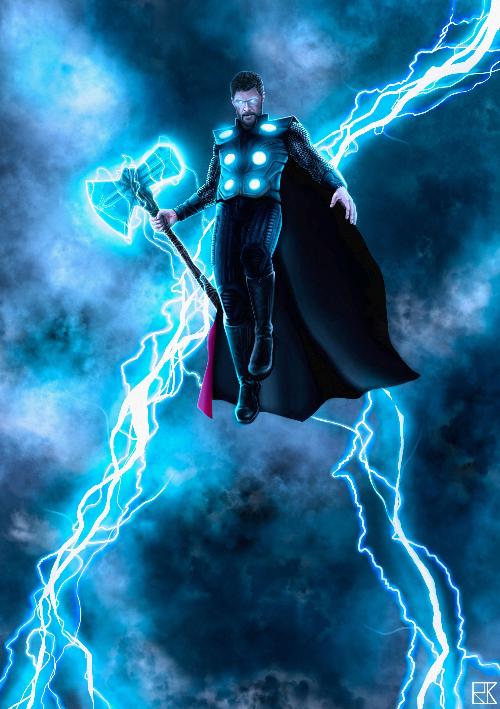

Story
Marvel Comics is the brand name and primary imprint of Marvel Worldwide Inc., formerly Marvel Publishing, Inc. and Marvel Comics Group, a publisher of American comic books and related media. In 2009, The Walt Disney Company acquired Marvel Entertainment, Marvel Worldwide's parent company. Marvel was started in 1939 by Martin Goodman as Timely Comics,[3] and by 1951 had generally become known as Atlas Comics. The Marvel era began in 1961, the year that the company launched The Fantastic Four and other superhero titles created by Stan Lee, Jack Kirby, Steve Ditko and many others. The Marvel brand, which had been used over the years, was solidified as the company's primary brand. Marvel counts among its characters such well-known superheroes as Spider-Man, Iron Man, Captain America, Thor, Hulk, Wolverine, and Captain Marvel, as well as popular superhero teams such as the Avengers, the X-Men, the Fantastic Four, and the Guardians of the Galaxy. Its stable of well-known supervillains includes the likes of Doctor Doom, Magneto, Ultron, Thanos, Green Goblin, and Kingpin. Most of Marvel's fictional characters operate in a single reality known as the Marvel Universe, with most locations mirroring real-life places; many major characters are based in New York City.[4] Additionally, Marvel has published several licensed properties from other companies. This includes Star Wars comics twice from 1977 to 1986 and again since 2015.
The Avengers are a fictional team of superheroes that appears in American comic books published by Marvel Comics. The team made its debut in The Avengers #1 (cover-dated Sept. 1963), created by writer-editor Stan Lee and artist/co-plotter Jack Kirby. Labeled "Earth's Mightiest Heroes", the Avengers consisted of Iron Man, Ant-Man, Hulk, Thor and the Wasp. The original Captain America was discovered trapped in ice in issue #4, and joined the group after they revived him. The Avengers are an all-star ensemble cast of established superhero characters from the Marvel Comics portfolio. Diegetically, these superheroes usually operate independently but occasionally assemble as a team to tackle especially formidable villains. This in contrast to certain other superhero teams such as the X-Men, whose characters were created specifically to be part of their team, with the team being central to their identity. The Avengers were created to create a new line of books to sell and to cross-promote Marvel Comics characters. An Iron Man fan might buy an Avengers book because Iron Man appears in them, and perhaps in turn take an interest in Thor, who appears in the same book as Iron Man's friend and comrade.[2] The cast usually features a few highly popular characters who have their own solo books, such as Iron Man, alongside a number of lesser-known characters who benefit from exposure, such as Quicksilver.[3] The Avengers have appeared in a wide variety of media outside of comic books, including several different animated television series and direct-to-video films. Beginning in 2008, they were adapted in a series of movies from Marvel Studios known as the Marvel Cinematic Universe, culminating with The Avengers in 2012, with more appearances of the team in subsequent movies.
The team debuted in The Avengers #1 (September 1963). Much like the Justice League, the Avengers were an assemblage of superheroes who each had an existing series of his own. All of the characters were created by Stan Lee and Jack Kirby. This initial series, published bi-monthly through issue #6 (July 1964) and monthly thereafter ran through issue #402 (Sept. 1996), with spinoffs including several annuals, miniseries and a giant-size quarterly sister series that ran briefly in the mid-1970s.[4] Writers of the first series included Roy Thomas, Steve Englehart, Gerry Conway, Jim Shooter, David Michelinie and Roger Stern. Artists included John Buscema, Tom Palmer, Neal Adams, George Perez, John Byrne and Steve Epting. Other spinoff series include West Coast Avengers, initially published as a four-issue miniseries in 1984, followed by a 102-issue series (Oct. 1985–Jan. 1994), retitled Avengers West Coast with #47;[5][6] and the 40-issue Solo Avengers (Dec.1987–Jan. 1991), retitled Avengers Spotlight with #21.[7][8]
